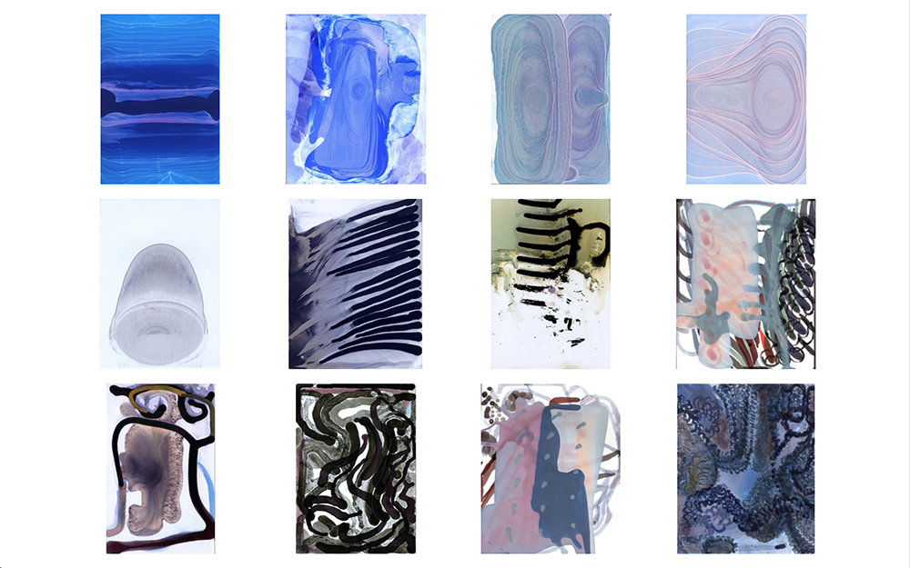
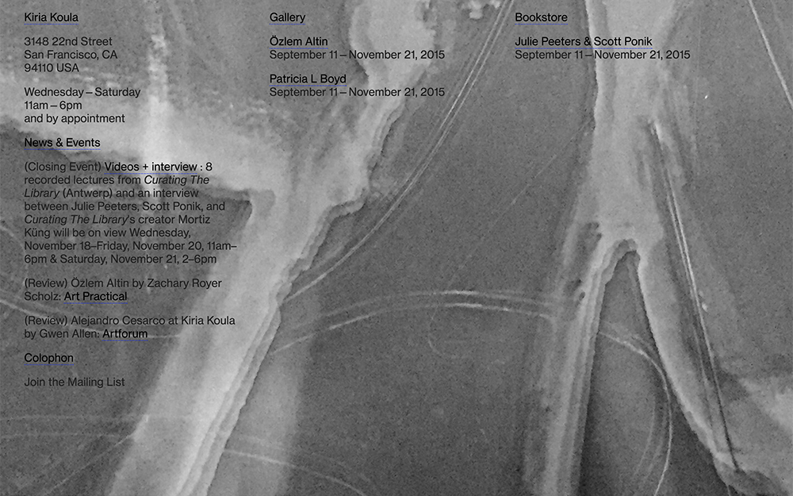
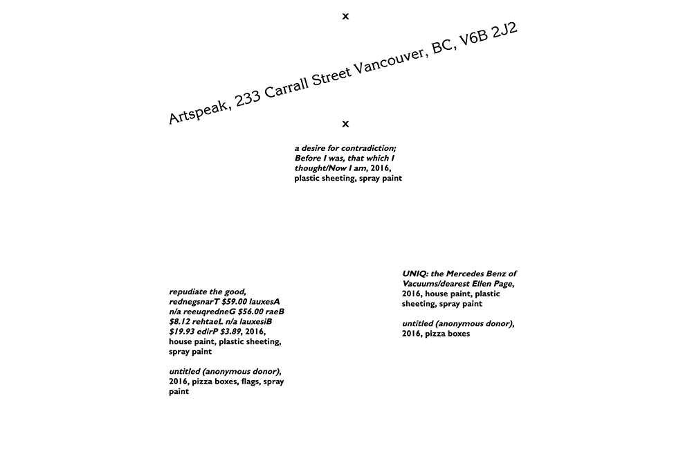
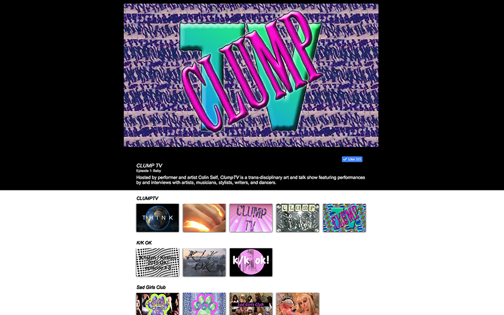

-

New York City Players
Typed-while-you-watch homepage for one of NYC's most beloved experimental theater companies. -

FuiszVideo
Frontend development at FuiszVideo: Shoppable video ads that use machine vision to make any object interactive. -

Alex Amini
A web portfolio for the artist Alex Amini. Designed by Rebecca Friedman. -

Kiria Koula
A playful online face for Kiria Koula gallery. Designed by Scott Ponik and Julie Peeters. -

Artspeak
Brand new website for a beloved Vancouver institution. WordPress backend. Designed by Scott Ponik and Julie Peeters. -

American Medium Network
A Hulu-style online screening room for video art at American Medium gallery.